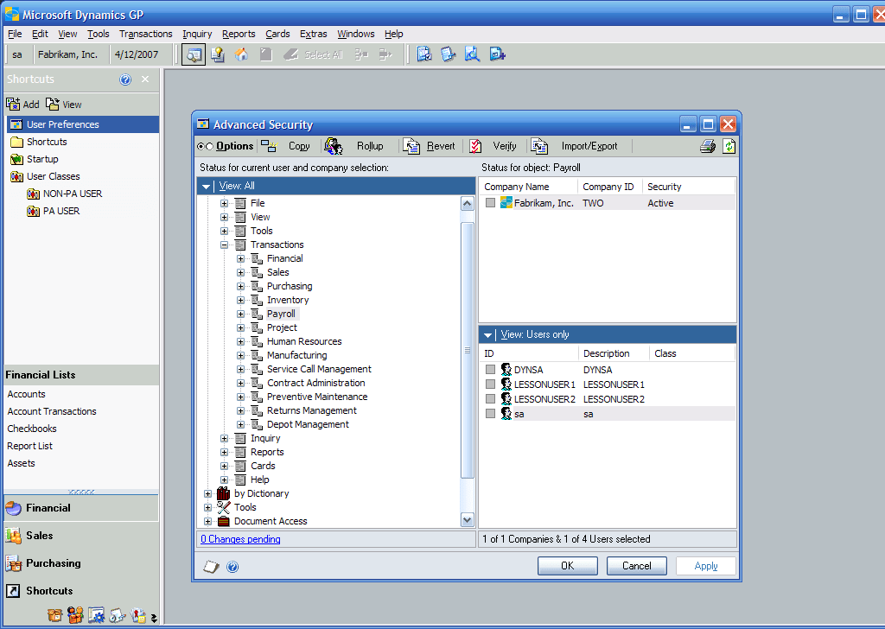
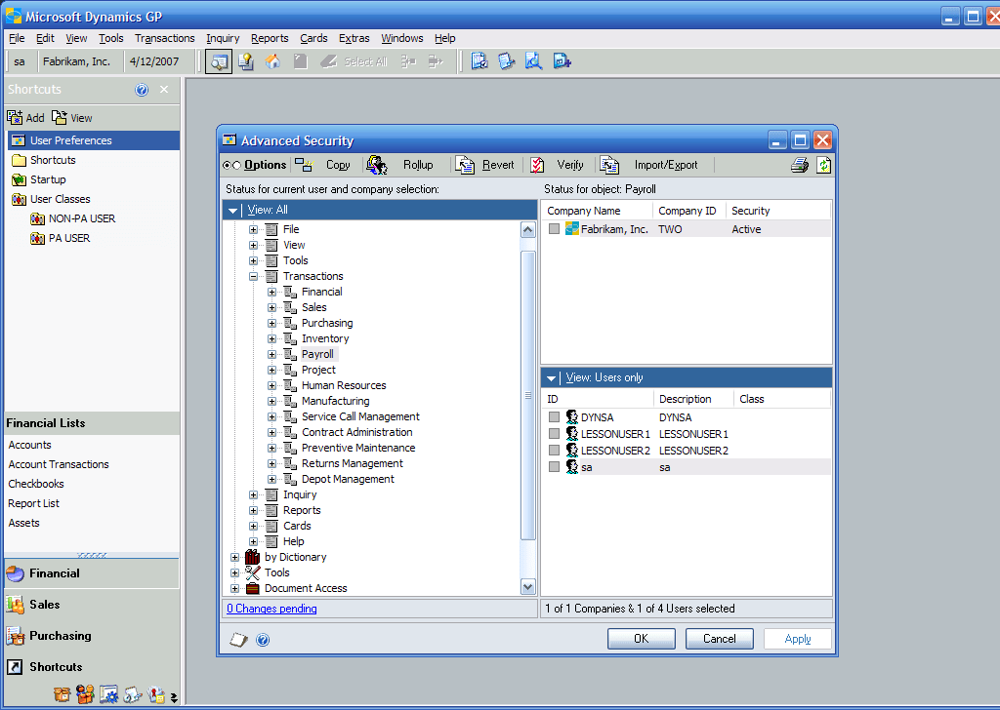
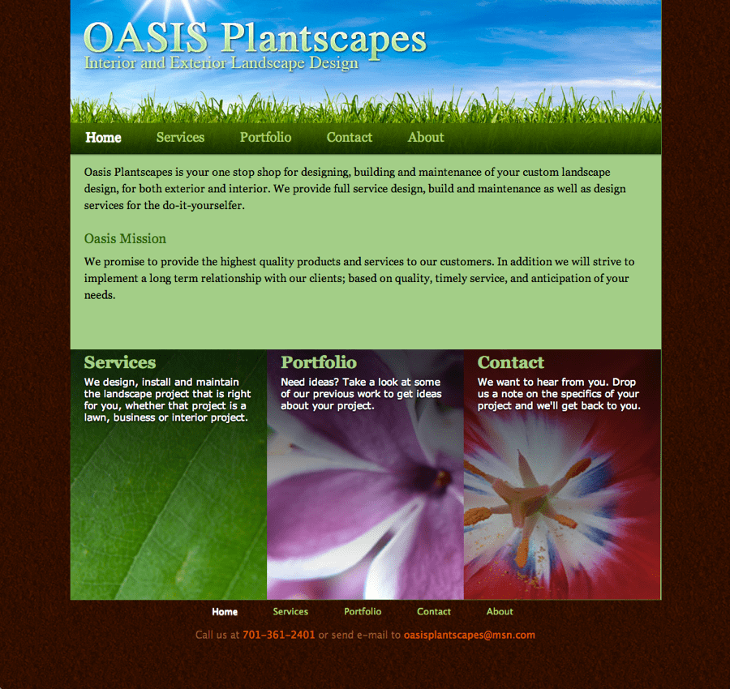
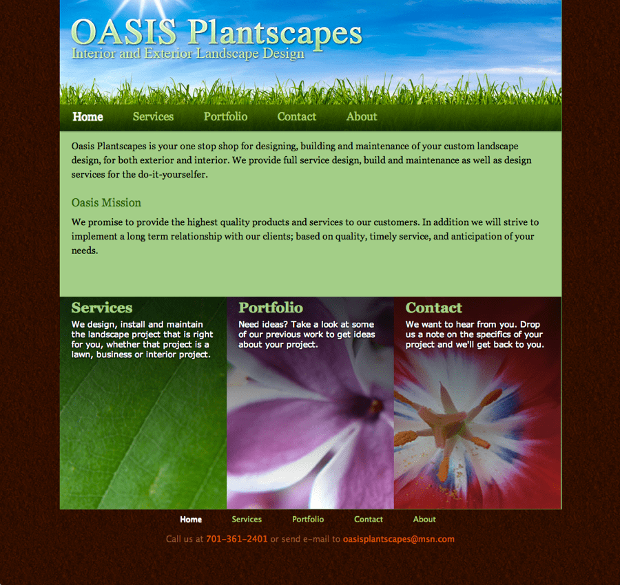

Brian Glaeske
I am a user experience designer working for Microsoft. I came to work at Microsoft via the acquisition of Great Plains Software in 1999.
As a user experience designer, I work to design and craft the user interface of Microsoft's Dynamics products. When I say design and craft, I mean that I and a team of other UX designers and researchers look at the people who use our software — generally people working in accounting or other aspects of business — and craft solutions that help them do their work. Our job is to ensure that the software works the way the people using the software want it to work, instead of forcing them to work they way we think they should.
User experience design is an intersection of art, science, intuition and passion. It is the careful application of each of these that makes a great experiences for the people using our software. My passion is for well designed application and experiences for all technology users.
Dynamics AX is an ERP (enterprise resource planning) suite that allows a company control every aspect of their business from accounting, human resources, distribution and more.
Resumé
User Experience Designer — Microsoft
I am responsible for the design and user experience architecture of a wide range of user experiences within Microsoft Dynamics including applications for Finance and HR departments based on the Microsoft Design Language (formerly known as Metro). In this role, I have translated user requirements, business problems, and scenarios into efficient interfaces using storyboards, wireframes, prototypes, and usability testing.
I have also defined the user interface implementation strategy and architecture for the web based presentation framework, specifically defining how HTML and CSS are used for maximum advantage.
- As user experience architect, defined the strategy for the next generation HTML5 based Dynamics AX for desktop and mobile experiences.
- Defined the HTML5 and CSS3 coding guidelines for the presentation framework and implemented the LESS CSS compiler.
- Led the implementation of the CSS3 framework for the presentation framework and mentored other designers in CSS3.
- Designed the Dynamics AX 2012 user experience in collaboration with other designers. Wrote guidelines for application program managers and third party ISVs to use as part of their implementations.
- Designed the user experiences for an HTML based HRM module.
- Defined and designed a new information architecture for Microsoft Dynamics.
- Designed and received a patent application for a dynamic user interaction model based the configuration of an adaptive business process.
Software Engineer — Great Plains
Designed, created specifications and developed user interfaces and widgets for a proprietary cross platform 4GL development tool. In this position, I gained a reputation for writing detail oriented requirements and designs. I was also responsible for fixing any bugs in Dexterity on both the Win32 and Macintosh versions of the product as well as DBA/Network administrator. I also designed and developed the Great Plains Personal Time & Billing, an application for the Apple Newton, one of the first mobile applications in 1993.
Portfolio
Microsoft Dynamics AX


This product re-imagined Microsoft Dynamics AX using the Microsoft Design Principles (formerly known as Metro) and user centric design.
As the user experience architect, I facilitated the design strategy for the common usage patterns and rework of AX from a Windows application to an HTML 5 web app. This project has required the design team to deliver:
- Task analysis and task type development based on the Dynamics Customer Model. The task type analysis led to the development of basic interaction patterns for an ERP system.
- Scenario development and research
- Scenario based wireframes
- Wireframe toolkit development
- User interface component design and specification
- Component prototyping and front-end development using HTML5, CSS and Javascript
- User interface guidelines and upgrade strategies from the legacy product
- Led a team of front-end developers working on the CSS and HTML for the client of Dynamics AX. Assisted in implementation of a visual test strategy and architected the CSS standards for the organization.
Dynamics AX 2012
An example of a form that embodies the entity detail pattern. Due to the complex nature of the data stored required by the users, a complete information architecture had to be designed for forms like this. In this case, multiple iterations of the form were produced and tested with users. We also used card sorts to assist with refining the design of the information.

For list pages in the system, we added elements called Factboxes to the right side of the window. Factboxes allowed the user to see additional information about the selection, without having to drill down on the full entity. Our goal with the list pages was to provide the ultimate interface in the system where a user could find the data they need to work with and work against that data.


Another key form that we introduced was what we call a Simple List & Details. This form pattern replaced a form pattern that we found to be unusable by a majority of new users. We used automated tools and manual verification to convert over 200 forms to this pattern.
For the Dynamics AX 2012 release I led the team designing the core user experiences. This team researched the common problems and pain points across the system and determined how best to solve these issues for maximum benefit. The team redefined the patterns used by over 1000 forms.
A key challenge of the project was how convert over 3000 existing forms to new patterns in a cost effective manner.
Web based HRM
The landing page for this product was envisioned to serve the needs of the employee and a manager. It was also to be used by the human resources department to publish news and information to the employees about important upcoming events.
The navigation of this product used a tabbed navigation system that was envisioned to be simple and understandable to a majority of the users.


The performance management landing page for an employee shows the employee the current status of the performance management process. Additionally, if the employee is also a manager, the page shows information related to the status of the manager's direct reports.
Throughout the product, progressive disclosure mechanisms, or super tooltips, were utilized to make information in the system easy to access.


This page shows an activity center for a recruiter. This page shows for a given position to be hired the status of all of the applicants for the position. Clicking on one of the stacks would open a list of applicants and provide a set of actions that could be taken against each one including viewing their resume and application.
This was to be a brand new HRM application integrating to Microsoft Dynamics to provide web based access to human resource data to employees. The design task was to deliver designs, guidelines and research. One of the primary innovations of this project was an interaction pattern library of the acceptable patterns. Research and learning about users of a human resource application allows development and many new innovations, including the use of expanded tooltips and activity centers.
Activity Centers
Each activity shown in an activity center is divided into stages and tasks. The stages were typically numbered and the tasks within each stage displayed as links or buttons.
This activity center shows a continuous process that provides a financial supervisor with insight into the progress of the process. It also provides workers with insight into what they need to do next.

This activity center illustrates how a checklist process would be visualized. In comparison to the previous illustration, the stages and tasks of this activity center are much more discrete and have a set start and due date.
The design for activity centers came out of an extended research and analysis project around defining the ERP customer model. The activity center is a set of elements helping a user understand the status of work in a long running business process. It does this by showing the user what they need to do to complete their work within that process and what other people are working on. The set of elements shown in an activity center is determined by the customized business process.
As shown below, activity centers can take many shapes as appropriate to the business process.
Project Time and Expense


For each project, a view of the tasks for that project are displayed. The information about each task includes title, description, due date, completion, and priority. Additional views provided the ability to display the tasks in a timeline or by due date.


An important performance indicator for a project team member is to ensure that their utilization numbers are high. One view displays the utilization for the team member in a natural manner including the use of a spark line to show the utilization trend over time.

Important to the project is that each project team members needs an efficient method of entering their time. Typically, this is a pain point with the users. This form was made as simple and effecient as possible. It was also envisioned that the time against a task could be entered using voice.
This is an exploration of a product to allow people to log project time and expenses in a service industry on the Windows Phone platform. The core scenario for this mobile application is that of monitoring tasks and deliverables.
Dynamics GP
This is one of the first explorations around re-envisioning the data presentation within the ERP system. In this case, we expanded upon concepts in the popular GP SmartList utility by adding better filtering and actions in a ribbon.
By the time this version of GP shipped, we had implemented a new set of user interface controls for navigation, and actions.
This is a vision for the Dynamics GP home page. The home page was to show the user a summary of the work that they had to do in the system as well as important business metrics and insights.
 

This screen shows the implementation of a design that became the Advanced Security utility. The key problem addressed by the design was the fact that many administrators did not set up security in GP. As it turned out, the problem was that the interfaces for setting up security were too hard to use. This design presented the elements to secure in a similar way to how a user would navigate to the item. This made the task of securing a resource much easier and more predictable.
Over the course of several years working on Dynamics GP and Dexterity, I was involved in the design of several key product features, including:
- Dynamics Explorer/Smartlist
- Dynamics GP home pages
- Dynamics Lists
- Dexterity Tree view and List view controls
- Advanced security
- Dynamics GP Utilities
Oasis Plantscapes
 

The home page outlines the key information about Oasis Plantscapes with links to deeper. The goal of this page was to be attractive to the potential clients to keep them clicking for more information.


This page outlines the key services offerred Oasis Plantscapes with links to more in depth information on each service. The organization of this information roughly follows the landscape design process.

The portfolio page is a simple photo album style presentation with the ability to click on each picture for a larger version. A standard lightbox Javascript utility was used.
The owner of Oasis Plantscapes wanted a presence on the web for his business. After a discussion with him of the key requirements, I created several options as composites for the owner to review. The composites used Oasis Plantscapes original color schemes. The basic information to organize was information about the work that Oasis performs, information about the company, and a portfolio of their work.
The pages were generated using PHP to allow reuse of the HTML across the pages and to dynamically populate the portfolio album.